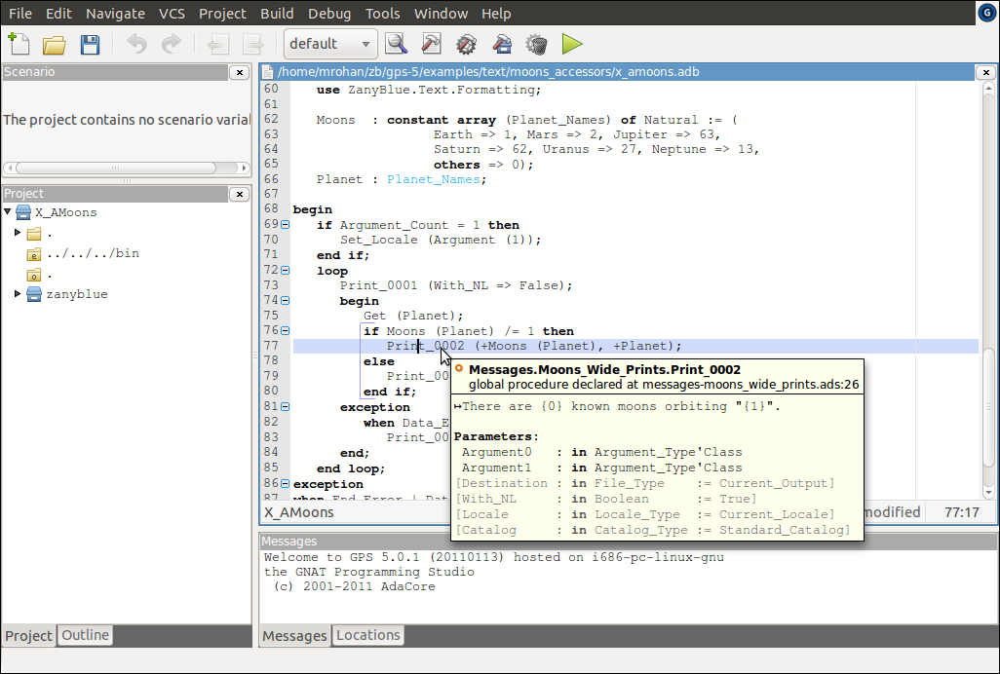

Example Using Accessor Functions¶
The style of message generation using a facility string, key string and
message arguments opens an application up to the risk of a mis-match between
the expected arguments for a message and the supplied arguments (possibly
causing the ZanyBlue exceptions No_Such_Argument_Error or
No_Such_Key_Error to be raised). It is also possible to silently, in
the sense the compiler does not fail to compile, introduce errors by
accidentally mis-spelling a facility or key value (again possibly causing the
exceptions No_Such_Facility_Error or No_Such_Key_Error to raised).
For an Ada application, where the compile time detection of errors is an expectation. This situation is not ideal. To overcome this, the ZanyBlue message compiler utility can generate accessor packages for the compiled facilities. These packages define functions and procedures for each key in the facility with a list of arguments matching the expected number of arguments. This allows the Ada compiler to perform checks on the references to messages of ZanyBlue-ised applications.
The zbmcompile utility generates three major classes of accessor
packages (when the -a option is given):
Accessor functions which return the localized formatted message for a message key. There are two accessor function packages generated:
A package for functions with return typed of
Wide_String.A package for functions with return typed of
String(the standard Wide Strings are encoding using the encoding schema defined by the locale, the default being UTF-8 encoding). See Encodings and The Codecs Type for more information on encodings.
In both cases, the functions generated are named by using message key prefixed with the string
Format_. This requires message keys, when prefixed withFormat_be valid Ada identifier.Accessor that print the localized formatted message similar to the standard
Put_Lineroutines. There are two styles of routines generated:Routines that use the standard
Ada.Wide_Text_IOroutines to print the formatted messages.Routines that convert the
Wide_StringtoStringusing the locale encoding and print this encoded string using Ada’sStream_IOroutines.
Accessor procedures which raise an exception with a localized formatted message (similar to the standard
Raise_Exceptionprocedure but extended to allow message arguments). The procedures names generated prefix the message key with the stringRaise_.
Normally, the narrow accessors should be used instead of the wide accessors as these support the user’s encoding.
These accessor packages are generated for each facility compiled and are created as child packages of the command line package name.
As an example, reworking the moons example in terms of the safer accessor functions, the code would be, e.g., for the message that prints the number of moons for a planet, using the generated wide print routine:
with Messages.Moons_Wide_Prints;
...
Print_0002 (+Moons (Planet), +Planet));
Here, the compiled messages are generated to the Messages package
and the accessor packages are child packages of it.
For this accessor example, the zbmcompile utility must be used with
the -a command line option to generate the accessor packages and
the target parent package is given as Messages:
$ zbmcompile -a -i -v Messages Moons
This is ZBMCompile, Version 1.3.0 BETA (r3009M) on 6/20/16 at 1:59 AM
Copyright (c) 2009-2016, Michael Rohan. All rights reserved
Loaded 25 messages for the facility "Moons" (4 locales)
Performing consistency checks for the facility "Moons"
Performing consistency checks for the accessor package generation
Loaded 1 facilities, 7 keys, 4 locales and 25 messages
Loaded total 829 characters, stored 829 unique characters, 0% saving
Wrote the spec "Messages" to the file "./messages.ads"
Wrote the body "Messages" to the file "./messages.adb"
Generated accessor package spec "Messages.Moons_Exceptions" to "./messages-moons_exceptions.ads"
Generated accessor package body "Messages.Moons_Exceptions" to "./messages-moons_exceptions.adb"
Generated accessor package spec "Messages.Moons_Strings" to "./messages-moons_strings.ads"
Generated accessor package body "Messages.Moons_Strings" to "./messages-moons_strings.adb"
Generated accessor package spec "Messages.Moons_Wide_Strings" to "./messages-moons_wide_strings.ads"
Generated accessor package body "Messages.Moons_Wide_Strings" to "./messages-moons_wide_strings.adb"
Generated accessor package spec "Messages.Moons_Prints" to "./messages-moons_prints.ads"
Generated accessor package body "Messages.Moons_Prints" to "./messages-moons_prints.adb"
Generated accessor package spec "Messages.Moons_Wide_Prints" to "./messages-moons_wide_prints.ads"
Generated accessor package body "Messages.Moons_Wide_Prints" to "./messages-moons_wide_prints.adb"
ZBMCompile completed on 6/20/16 at 1:59 AM, elapsed time 0:00:00.124
The minor difference in the naming of the properties files should also be
noted: for the example in the previous section, the files, and hence the
facility, were all lower case. Here, the base file name is Moons.
This allow the generated Ada packages to have the more expected name
Moons_Wide_Strings.
Since the messages are now, in a sense, handled by the Ada compiler, IDE’s, e.g., GPS, will display the message text (the generated packages include the message text, with markers explained later). The accessor display in GPS for the example message above is given in following image:

The keys used for the messages in this example are simple numeric style strings. The GPS IDE will also display the base language text and the number of arguments expected for accessors as the generated Ada code includes this text as a comment.